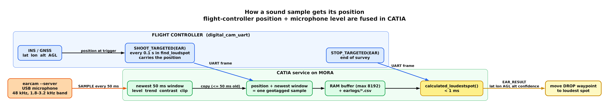

EARcam Position and Sound Data Flow
How acoustic measurements and flight-controller coordinates are synchronized, buffered, and solved on the MORA companion computer.
Documentation Hub | Camera Pipeline | AI Camera | LWIR Calibration | EARcam Guide | EARcam Data Flow | Mission 2 Plan
Synchronization Overview
The microphone never knows where it is in space. The earcam --server daemon
continuously samples the USB microphone and publishes loudness features every
50 ms. The flight controller sends its own navigation state (INS/GNSS position,
altitude, and attitude) with each camera trigger.
CATIA fuses these two streams: when a targeted shoot message arrives over UART, CATIA stamps the flight controller's position onto the newest 50 ms audio window.
- Maximum alignment latency: at most one audio window ($\le 50\text{ ms}$, corresponding to $\approx 0.5\text{ m}$ at $10\text{ m/s}$ groundspeed).
- Sample rate: determined by the flight-controller trigger frequency (e.g. 10 Hz in search blocks), while the audio capture runs independently at 20 Hz.
- Staleness guard: audio windows older than 500 ms are rejected.

Data Flow Pipeline
The acoustic localization pipeline is split into three coordinated subsystems:
1. Flight Controller (digital_cam_uart module)
During search blocks (such as find_loudspot in Mission 4), the autopilot emits
periodic targeted camera commands over UART at 115200 baud:
SHOOT_TARGETED(EAR): carries position (lat,lon), altitude (alt,groundalt), attitude (phi,theta,psi), groundspeed, and course.STOP_TARGETED(EAR): signals the end of the survey leg and requests an interim or final loudest-spot computation.
2. Audio Capture (earcam --server)
The earcam process runs as a background capture daemon on MORA:
- Interfaces with the USB audio capture card via ALSA at 48 kHz.
- Computes bandpass energy over the configured frequency band (e.g. 2.4-3.2 kHz or 1.8-3.2 kHz for motionSCOUT alarms).
- Emits loudness window statistics every 50 ms over an internal Unix pipe.
3. CATIA Service on MORA
CATIA manages the lifecycle, fusion, logging, and solver execution:
- Receives UART frames and matches them to the latest loudness window.
- Records geotagged samples into an in-memory ring buffer (up to 8192 samples).
- Persists raw samples to disk in
~/usher_debug_data/ear_*.csv. - Executes
calculated_loudestspot()in under 1 ms upon receiving a stop trigger. - Transmits
EAR_RESULT(lat,lon,AGL,alt,confidence) back to the flight controller to relocate theDROPwaypoint.
Sample Field Origins
| Field in Geotagged Sample | Origin | Description |
|---|---|---|
lat, lon, alt |
Flight Controller INS/GNSS | WGS84 latitude, longitude, and MSL altitude at trigger time |
AGL |
Flight Controller | Height above ground reference or rangefinder measurement |
level_db |
earcam --server |
Filtered band loudness in decibels |
trend_db |
earcam --server |
Short-term loudness slope over sliding windows |
contrast_db |
earcam --server |
Signal-to-noise ratio against background spectrum |
frequency_hz |
earcam --server |
Dominant frequency peak within detection band |
alarm |
earcam --server |
Boolean flag indicating active motionSCOUT alarm pattern |
clipped |
earcam --server |
Boolean flag indicating ADC saturation |
timestamp_ms |
earcam --server |
Monotonic millisecond timestamp of the audio window |
Ground Tools and Replay
Session logs saved in ~/usher_debug_data/ can be re-analyzed on the ground:
ear_heatmap_replay: readsear_YYYYMMDD_HHMMSS.csvand generates the north-up acoustic heatmap JPEG (photos/eNNNNNN.jpg) and its.geosidecar.ear_heatmap_overlay.py: composites the acoustic heatmap over Google satellite imagery tiles, drawing flight tracks, sample points, and the computed loudest-spot crosshair.
Related Documentation
- EARcam Explained: detailed algorithm, inverse-square loudness fitting, and search patterns.
- CATIA Camera Pipeline: MORA deployment, camera backends, and systemd service management.
- Raspberry Pi AI Camera: IMX500 setup and optical capture integration.
- LWIR Camera Calibration: thermal sensor calibration and mounting alignment.
- Mission 2 Scoring Plan: competition scoring and flight validation.